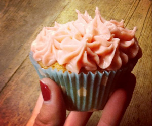

Elenas Fairy-Cakes
5,5 von 6Zuerst den Ofen auf 180 C vorheizen und die Mulden eines Muffinbackblechs mit Papierbackformen auslegen oder einfetten.
174 g weiche Butter in einer großen Rührschüssel schlagen, bis sie leicht und locker ist. 150 ml Milch und 1 TL Vanilleextrakt hineinrühren.
115 g Zartbitterschokolade im Wasserbad schmelzen, dann zur Buttermischung hinzufügen.
Nacheinander 275 g Mehl, 1 TL Backpulver, 1/2 TL Natron und 300 g extrafeiner Streuzucker über die Schockomischung sieben und hineinrühren. Nacheinander 3 Eier hinzufügen und gut rühren.
Die Mischung gleichmässig auf die muffinförmhen aufteilen. 20-25 Minuten backen.
Die Kuchen herauslösen und auf einem Kuchengitter abkühlen lassen.
Für die Buttercreme 40 g Butter schmelzen und abkühlen lassen. Dann die Butter mit 115 g Puderzucker und 1/2 TL Vanilleextrakt schlagen. Soviel Milch hinzugeben, dass eine cremige Konsistenz entsteht ( circa 1-2 EL ). Auf den ausgekühlten Kuchen verteilen.
